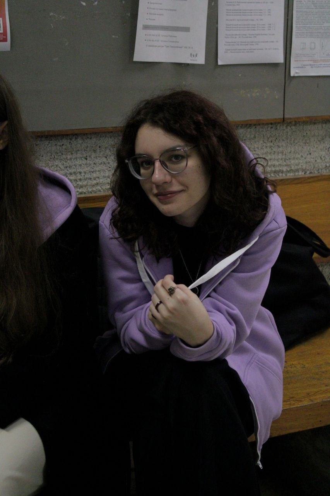

Антонова Ирина Андреевна

Общая информация
- Telega
- 20 y.o.
- github k00kzaAntonovaIra
Мои лабораторные работы
Мои хобби
Посмотреть список книг за этот год
Места обучения
| Место |
Год |
| Испанский |
2010 - 2015 |
| Физмат |
2015 - 2019 (21) |
| Физхим |
2019 - 2021 |
| РНИМУ биофизика |
2021 - 2023 |